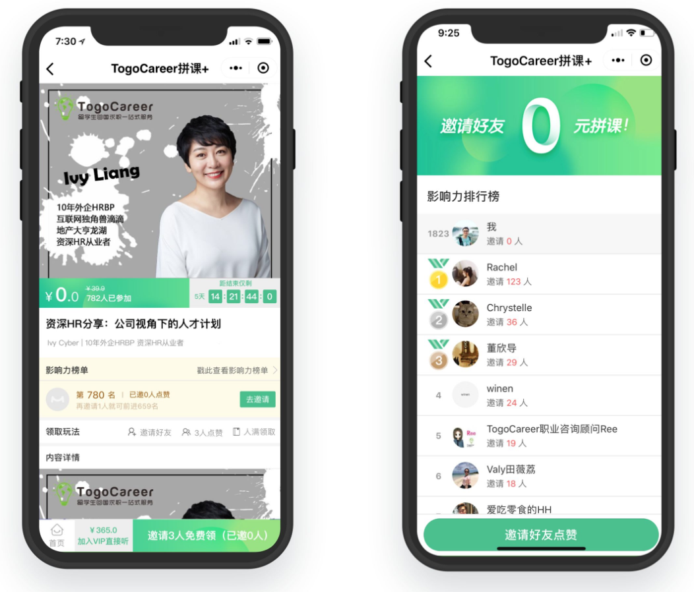
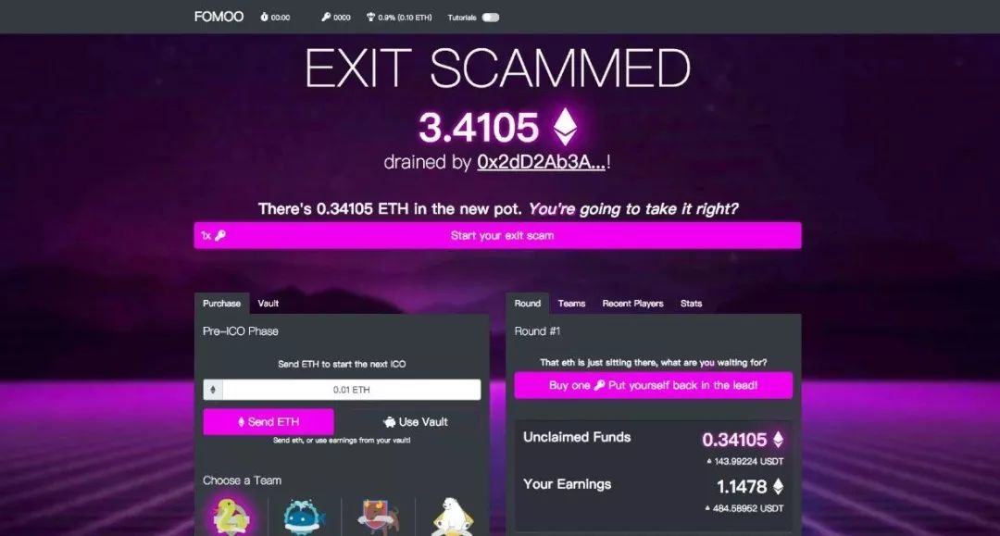

45 लाख के घाटे से 200 लाख के राजस्व तक | मूल, AI द्वारा अनुवादित

पहले एक दिन में कम से कम एक वीचैट मोमेंट पोस्ट करने वाले और अपने पब्लिक अकाउंट पर लगातार अपडेट पोस्ट करने वाले युवा उद्यमी, पिछले साल 22 साल के उम्र में धूमधाम से शुरुआत करने वाले ली झीवेई ने कई महीनों से अपने वीचैट मोमेंट पर कुछ भी पोस्ट नहीं किया है। इस साल की शुरुआत में, नेटिज़न्स ने कहा कि अब उनकी उम्र हो गई है और उन्हें कुछ ठोस काम करना चाहिए। उन्हें लगा कि नेटिज़न्स की बात सही है। इस साल 23 साल के हो चुके ली झीवेई ने खुद को शांत कर लिया है।
इस साल, उन्होंने तकनीकी लाइव स्ट्रीमिंग प्लेटफॉर्म से तकनीकी सॉफ्टवेयर आउटसोर्सिंग में कदम रखा, जो एक नई शुरुआत थी। वे ग्राहकों को डिज़ाइन और विकास की पूरी सेवा प्रदान करते हैं, और ग्राहकों को मिनी प्रोग्राम, ऐप, वेबसाइट, आर्टिफिशियल इंटेलिजेंस उत्पाद, और ब्लॉकचेन उत्पाद बनाने में मदद करते हैं। उनके सॉफ्टवेयर आउटसोर्सिंग ग्राहकों में शिक्षा क्षेत्र की यूनिकॉर्न कंपनी Xiaoyuan Souti, ऑनलाइन सिविल सेवा परीक्षा शिक्षा कंपनी Fenbi, और आर्टिफिशियल इंटेलिजेंस स्टार्टअप Zhongke Shituo जैसी 20 से अधिक कंपनियां शामिल हैं। उन्होंने इन कंपनियों के लिए 40 से अधिक विभिन्न प्रोजेक्ट पूरे किए हैं।
कंपनी ने सॉफ्टवेयर आउटसोर्सिंग में परिवर्तन करने के बाद, 2018 की पहली छमाही में कंपनी का राजस्व 20 लाख युआन से अधिक हो गया, और लाभ 5 लाख युआन से अधिक हो गया। हाल ही में, पूर्णकालिक और अंशकालिक कर्मचारियों की संख्या भी 15 तक पहुंच गई है। हालांकि ये आंकड़े छोटे हैं, लेकिन इस साल में कंपनी ने विकास किया है, नई समझ और नए अनुभव प्राप्त किए हैं।
आज, ली झीवेई ने एक बार फिर सभी के सामने खुलकर बात की, और हमने निम्नलिखित साक्षात्कार किया।

जियांगसू टीवी का शो "सुपर ब्रेन"
आधिकारिक मिनी प्रोग्राम "बर्न योर ब्रेन"
लैनशी मीडिया डिज़ाइन कंपनी के साथ सहयोग
ग्राहक को डिज़ाइन और विकास की पूरी सेवा प्रदान की
प्रोजेक्ट को ग्राहक से प्रदर्शन के लिए अधिकृत किया गया है
प्रश्न: आपको क्यों लगता है कि आपकी आउटसोर्सिंग की मांग है?
ली झीवेई: पहली बात, जब उनके पास कोई प्रोजेक्ट होता है और वे कुछ नया आज़माना चाहते हैं, तो अगर उन्हें पूरी टीम को भर्ती करना हो, तो वर्तमान में इंजीनियरों को भर्ती करने की लागत बहुत अधिक है। ऐसे में, आउटसोर्सिंग अक्सर एक सस्ता विकल्प होता है।
हमारे दाम बाजार में काफी किफायती हैं, इसलिए हमसे संपर्क करने का एक फायदा यह है कि यह सस्ता है, और दूसरा यह कि यह लचीला है। अगर आपको पूर्णकालिक इंजीनियर की आवश्यकता है, तो आपको उन्हें लगातार रखना होगा, न कि सिर्फ एक प्रोजेक्ट के लिए और फिर प्रोजेक्ट लॉन्च होने के बाद उन्हें निकाल देना। हम एक विश्वसनीय अस्थायी कर्मचारी के रूप में काफी जरूरी हैं।
दूसरा, कुछ बड़ी कंपनियां जिनके साथ हम काम करते हैं, वे भी कुछ प्रोजेक्ट्स को हमें आउटसोर्स करती हैं। ऐसा क्यों होता है? मान लीजिए आपके पास एक बहुत अच्छा आउटसोर्सिंग पार्टनर है, जो काम को बहुत विश्वसनीय और उच्च गुणवत्ता के साथ करता है, जैसे कि कंपनी के अंदर का कोई व्यक्ति। कभी-कभी कंपनी के पास किसी प्रोजेक्ट को करने के लिए पर्याप्त संसाधन नहीं होते हैं, ऐसे में आप उस प्रोजेक्ट को एक विश्वसनीय आउटसोर्सिंग पार्टनर को सौंपना पसंद करेंगे।
अंदरूनी रूप से काम करने पर अक्सर लागत बहुत अधिक होती है, इंजीनियरों का वेतन 20,000 से 30,000 तक हो सकता है। जबकि हमारे जैसे आउटसोर्सिंग के तरीके से लागत कम होती है। हमारी लागत कम क्यों है? एक कारण यह है कि हम प्रोजेक्ट-आधारित प्रोत्साहन प्रणाली के माध्यम से प्रतिभा का बेहतर उपयोग करते हैं। हम एक व्यक्ति को फ्रंट-एंड और बैक-एंड दोनों तकनीकी काम सौंप सकते हैं, जो काम अन्य कंपनियों में तीन लोग करते हैं, वही काम हम एक व्यक्ति से करवाते हैं, और उस व्यक्ति को हम दोगुना पैसा देते हैं।
उदाहरण के लिए, अगर तीन इंजीनियरों को नियुक्त करने के लिए 60,000 रुपये की आवश्यकता होती है, तो मैं एक इंजीनियर को 40,000 रुपये देता हूं, और वह सारा काम अकेले कर देता है। वह खुश होता है, और हम भी पैसे बचाते हैं। इस तरह से करने से संचार लागत भी कम हो जाती है, और कभी-कभी यह दो या तीन लोगों की तुलना में अधिक कुशल होता है।
लेकिन कंपनी में ऐसा करना संभव नहीं है। कंपनी में बहुत कुशल लोग होते हैं, और वे ये सारे काम कर सकते हैं, लेकिन यह बहुत थकाऊ होगा, और सैलरी में भी कोई वृद्धि नहीं होगी। इसलिए, यह इंजीनियर बैकएंड करता है, और फ्रंटएंड के लिए किसी और को लगाया जाता है। कंपनी की प्रेरणा प्रणाली यह है: हर व्यक्ति को एक महीने में कितना पैसा मिलता है, मैं बैकएंड का काम करता हूं तो भी इतना ही पैसा मिलता है, और अगर मैं सब कुछ कर लूं तो भी इतना ही पैसा मिलता है। इसलिए, इंजीनियर के पास इतना मेहनत वाला काम करने की प्रेरणा नहीं होती।

"आई शेफ" मिनी प्रोग्राम
आई शेफ कंपनी के साथ सहयोग
ग्राहक को मिनी प्रोग्राम का फ्रंटएंड बनाने में मदद
प्रोजेक्ट को ग्राहक की अनुमति से प्रदर्शित किया गया है
इसके अलावा, हमारे पास कुछ इंजीनियर पार्ट-टाइम हैं, और उनका वेतन फुल-टाइम इंजीनियरों की तुलना में कम होता है। कुछ कंपनियों में ऐसे पद होते हैं जहां काम ज्यादा नहीं होता, लेकिन उन्हें फुल-टाइम इंजीनियर के रूप में रखा जाता है और पूरे महीने का वेतन दिया जाता है। हमारे यहां, वेतन काम के हिसाब से दिया जाता है। एक प्रोजेक्ट दो हफ्तों में पूरा हो सकता है, इसलिए हम उसी हिसाब से दो हफ्तों का वेतन देते हैं। दूसरी बात, हमारे इंजीनियर बहुत मेहनती हैं। वे बड़ी कंपनियों में फुल-टाइम काम करते हैं, और हमारे यहां पार्ट-टाइम में महीने में एक-दो लाख रुपये कमा लेते हैं, जिससे वे खुश हो जाते हैं। लेकिन अगर फुल-टाइम इंजीनियर की बात करें, तो अभी बीजिंग में अच्छे इंजीनियर का वेतन 2 लाख रुपये से ऊपर ही होता है।
साथ ही, बड़ी कंपनियों के साथ सहयोग करने पर, उनके पास संपर्क करने के लिए बहुत से लोग होते हैं, जबकि हमारे यहाँ, एक व्यक्ति ही उनके तीन-पांच लोगों के साथ संपर्क कर सकता है। मुझे याद है कि जब मैंने पहली बार Qu Live (क्यू लाइव) के साथ उद्यम शुरू किया था, तब मैं अकेले काम कर रहा था और कंपनी फिर भी मुनाफा कमा रही थी, क्योंकि मैंने प्रचार और कोडिंग का काम खुद ही कर लिया था। हालांकि मुनाफा ज्यादा नहीं था, महीने का टर्नओवर केवल कुछ हजार युआन था, और लाभ केवल दस-बीस हजार युआन। लेकिन मैंने काफी सारे उपयोगकर्ताओं को जमा कर लिया था, और अगर उपयोगकर्ता मूल्य को गिना जाए, तो मैंने वास्तव में अच्छा मुनाफा कमाया था।
इसलिए मैं बहुत पहले से जानता हूं कि कंपनी में जितने ज्यादा फुल-स्टैक वाले लोग होंगे, वे कुछ भी कर सकते हैं, एक व्यक्ति बहुत सारे काम कर सकता है, और कंपनी इस तरह से बेहतर तरीके से जीवित रह सकती है। एक व्यक्ति जो टेस्टिंग कर सकता है, कॉपीराइटिंग कर सकता है, मार्केटिंग कर सकता है, और सेल्स भी कर सकता है। छोटी कंपनियों में अपेक्षाकृत सर्व-गुण संपन्न लोगों की जरूरत होती है, जो सभी काम कर सकें, यह व्यक्ति कई पदों पर काम कर सकता है, वह व्यक्ति भी कई पदों पर काम कर सकता है, और एक व्यक्ति का समय पूरी तरह से भरा होना चाहिए। अगर वह टेस्टिंग कर रहा है, तो उसे पूरे दिन टेस्टिंग करने दें, हमेशा काम में लगा रहना चाहिए। अगर वह सेल्स है, तो उसे पूरे दिन सेल्स करने दें। जब सेल्स का काम कम हो, तो उसे टेस्टिंग भी करने दें।
मेरे व्यक्तिगत अनुभव के आधार पर, आपको अपनी सैलरी वापस कमाना वास्तव में बहुत मुश्किल होता है। उस समय मुझे भी लगता था कि मेरी क्षमता अच्छी है, क्योंकि मैं एक प्रमुख इंटरनेट कंपनी से आया था। जब मैंने स्टार्टअप शुरू किया, तो मेरे पास कुछ कनेक्शन थे जिन्हें मैं लाइव स्ट्रीमिंग के लिए बुला सकता था, लेकिन फिर भी मुझे छह महीने लग गए तब तक मैं महीने में तीन-चार लाख का टर्नओवर और एक-दो लाख का मुनाफा कमा पाया।
मैंने काफी संसाधनों का उपयोग किया है, लेकिन केवल थोड़ा सा पैसा कमाया है। इससे यह स्पष्ट होता है कि पैसा कमाने के लिए, मेरे व्यक्तिगत विचार में, वास्तव में बहुत कुछ करना पड़ता है। हमारी कंपनी में, मैंने बहुत कुछ किया है, मेरे सहकर्मियों ने भी ऐसा ही किया है, और यहां तक कि वे बड़ी और प्रतिष्ठित कंपनियां भी बहुत मेहनत करती हैं। जैसे कि Alibaba और Huawei, उनके इंजीनियर भी अक्सर ओवरटाइम काम करते हैं, इसलिए वे बहुत पैसा कमाते हैं।
प्रश्न: आउटसोर्सिंग के दौरान, आपको लगता है कि सबसे कठिन पहलू क्या है?
ली झीवेई: कंपनी के आकार में वृद्धि के साथ आने वाली चुनौतियां। हमने एक लाइव क्विज प्रोजेक्ट किया था, जो हमारे इंजीनियरों के रूप में पहला आउटसोर्सिंग प्रोजेक्ट था। उस समय हम केवल एक प्रोजेक्ट में शामिल थे और इसे अच्छी तरह से पूरा कर सकते थे, लेकिन बाद में जब प्रोजेक्ट्स की संख्या बढ़ गई, जैसे कि 10 प्रोजेक्ट्स, तो यह संभव नहीं था कि हम एक प्रोजेक्ट की तरह ही काम कर सकें। एक व्यक्ति इतने सारे प्रोजेक्ट्स को मैनेज नहीं कर सकता, आपको दूसरों को मैनेज करने देना होगा। हर प्रोजेक्ट में पूरी तरह से शामिल होना संभव नहीं है, इसलिए प्रोजेक्ट्स की संख्या बढ़ने और आकार बढ़ने के साथ चुनौतियां आती हैं।
हर व्यक्ति अलग होता है, और यह संभव नहीं है कि प्रोजेक्ट मैनेजर आपके विचारों और तरीकों को पूरी तरह से अपनाएं। खासकर जब प्रोजेक्ट मैनेजर के पास तकनीकी पृष्ठभूमि नहीं होती है, तो उन्हें कुछ अन्य समस्याओं का सामना करना पड़ सकता है, जैसे कि ग्राहकों के साथ संवाद करना आदि। यह संभव नहीं है कि वे हर बात आपके तरीके से करें। तो फिर कैसे कोई आपकी तरह सोच और कार्य कर सकता है? मैं धीरे-धीरे यह समझने लगा हूं कि इसे पूरी तरह से नियंत्रित करना असंभव है।

《汉语大词典》मिनी प्रोग्राम
लैन शि मीडिया डिज़ाइन कंपनी के साथ सहयोग
ग्राहक को डिज़ाइन, विकास की पूरी सेवा प्रदान की गई
प्रोजेक्ट को ग्राहक की अनुमति प्राप्त है और प्रदर्शित किया जा सकता है
अब हम धीरे-धीरे एक निश्चित प्रक्रिया विकसित कर रहे हैं, जिससे पूरी प्रक्रिया मेरे नियंत्रण में रहे। उदाहरण के लिए, एक प्रोजेक्ट के लिए ग्राहक के साथ संवाद करना, माइंड मैप बनाना, प्रोजेक्ट के मुख्य कार्यों का विश्लेषण करना, और फिर एक कोटेशन तैयार करके ग्राहक के साथ सहयोग पर चर्चा करना। इस प्रक्रिया में, मैंने महसूस किया कि प्रबंधन के स्तर पर इतनी बारीकियों की आवश्यकता नहीं है, बल्कि केवल परिणाम पर ध्यान देना चाहिए। उदाहरण के लिए, जब सेल्स टीम ग्राहक के साथ प्रोजेक्ट पर चर्चा कर रही हो, तो यह देखने की जरूरत नहीं है कि वे ग्राहक के हर सवाल का कैसे जवाब देते हैं, बल्कि यह देखना चाहिए कि क्या वे प्रोजेक्ट हासिल कर पाए हैं। अगर प्रोजेक्ट हासिल नहीं हुआ है, तो इसके पीछे क्या कारण है, और हमें सबसे महत्वपूर्ण मुद्दों पर ध्यान केंद्रित करना चाहिए।
संक्षेप में कहें तो, यह चुनौती है कि कैसे मैं दो-तीन लोगों के साथ एक प्रोजेक्ट करता था, और अब टीम में बीस-तीस लोग एक साथ दस से अधिक प्रोजेक्ट्स पर काम कर रहे हैं। कंपनी को कैसे प्रक्रियाबद्ध बनाया जाए, कैसे ग्राहकों को सर्वोत्तम अनुभव दिया जाए, और यह सुनिश्चित किया जाए कि कंपनी के आकार में वृद्धि के बावजूद, हर कर्मचारी संस्थापक की तरह ग्राहकों को सर्वोत्तम अनुभव प्रदान कर सके।
प्रश्न: भविष्य के लिए कोई योजनाएं हैं?
ली झीवेई: 10 प्रोजेक्ट्स को एक साथ करने से लेकर 30-40 प्रोजेक्ट्स को एक साथ करने तक, यह एक ऐसा सवाल है जिसके बारे में मैं लगातार सोचता रहा हूं। हमें ज्यादा से ज्यादा मानकीकृत प्रक्रियाओं को अपनाना चाहिए, जैसे कि असेंबली लाइन उत्पादन।
हमारी कंपनी में अभी कुछ इंजीनियर पूर्णकालिक हैं, और कुछ अंशकालिक हैं। हम भविष्य में भी इसी रास्ते पर चलते रहेंगे, कुछ अंशकालिक इंजीनियरों को ढूंढेंगे, न कि सभी को पूर्णकालिक रखेंगे। इसके कई फायदे हैं।
उदाहरण के लिए, अगर हम 10,000 प्रोजेक्ट्स की बात करें, तो यह मूल रूप से सूचना मिलान (information matching) का काम है। हम एक सूचना प्लेटफॉर्म के रूप में काम करते हैं, इसलिए वास्तव में कोड लिखने वाले हम नहीं हैं, लेकिन हम जानते हैं और अच्छे इंजीनियर्स को ढूंढ सकते हैं। कुछ कोर कामों के लिए मैं फुल-टाइम इंजीनियर्स को नियुक्त करता हूँ। इसके अलावा, डिज़ाइन का काम विकास की प्रगति को प्रभावित करता है, इसलिए मैं इसे भी ज्यादातर फुल-टाइम कर्मचारियों को सौंपने की कोशिश करता हूँ। अन्य काम, जैसे फ्रंट-एंड वेब डेवलपमेंट, क्लाइंट साइड डेवलपमेंट, और बैकएंड मैनेजमेंट, शायद पार्ट-टाइम इंजीनियर्स को सौंपे जा सकते हैं।
भविष्य में और विस्तार होने पर, यह संभव नहीं होगा कि हम सभी काम खुद करें और सभी कोड खुद लिखें। हमारा काम सिर्फ सूचना का मिलान करना है, उन इंजीनियरों को ढूंढना है जिनके पास होम लोन है, दबाव है, और जो खाली हैं, पार्ट-टाइम काम करने के इच्छुक हैं, लेकिन क्लाइंट कंपनियों को इन लोगों की जानकारी और संपर्क विवरण नहीं है। इसलिए, हम इंजीनियरों और क्लाइंट कंपनियों के बीच मेलजोल करने का काम करते हैं।
उदाहरण के लिए, Taobao पर उत्पाद स्वयं Taobao द्वारा प्रदान नहीं किए जाते हैं, इसकी एक महत्वपूर्ण क्षमता सूचना मिलान है, और यह इसी हिस्से से पैसा कमाता है, जिसके कारण यह एक बड़ा प्लेटफॉर्म बन पाया है। Taobao 10,000 व्यापारियों की सूचना मिलान को अच्छी तरह से संभाल सकता है, तो हम भी 10,000 परियोजनाओं की सूचना मिलान को अच्छी तरह से संभाल सकते हैं।
जब प्रोजेक्ट्स की संख्या बढ़ती है, तो हम एक आंतरिक प्रबंधन प्रणाली बनाते हैं। 10,000 प्रोजेक्ट्स की प्रगति, जिम्मेदार व्यक्ति और टीम के सदस्य सभी सिस्टम में दर्ज किए जाएंगे। इससे सभी प्रोजेक्ट्स की स्थिति को एक नज़र में देखा जा सकेगा। साथ ही, हर प्रोजेक्ट के प्रोजेक्ट मैनेजर के साथ जुड़कर, हल्के स्तर पर निगरानी की जा सकेगी, जिससे हर सदस्य को व्यक्तिगत रूप से प्रबंधित करने की आवश्यकता नहीं होगी।

《TogoCareer पाठ्यक्रम साझा करें》मिनी प्रोग्राम
प्रोजेक्ट को ग्राहक से प्रदर्शन के लिए अधिकृत किया गया है
यदि कुछ प्रोजेक्ट मैनेजर उपयुक्त नहीं होते हैं, तो प्रोजेक्ट अपेक्षा के अनुरूप नहीं हो सकता है। ऐसे मामलों में, हम निगरानी करते हैं ताकि समय पर कर्मचारियों को बदला जा सके। इस प्रक्रिया में हम यह भी जान पाते हैं कि कौन सी टीमें विश्वसनीय हैं और कौन से लोग विश्वसनीय हैं। हम इन विश्वसनीय लोगों के साथ, चाहे वे पूर्णकालिक हों या अंशकालिक, लंबे समय तक घनिष्ठ संबंध बनाते हैं।
另一个计划是，先承接一些比较小的项目，预算在5到8万之间，两三个工程师就可以完成。对于这种规模较小的项目，我们有信心即使项目完全失败，也能通过其他项目的利润来弥补，或者重新再做一次。同时，我们相信随着项目数量的增加，我们能积累更多的客户，从而逐步扩大业务规模。
प्रश्न: ऐसा लगता है कि वर्तमान में आप अकेले ही प्रबंधन और समन्वय कर रहे हैं, मूल रूप से सभी चीजों का ध्यान रखना पड़ता है, तो क्या ऐसा हो सकता है कि आप व्यस्त हो जाएं और ग्राहकों को अच्छी सेवा न दे पाएं?
उत्तर: हां, यह सच है कि मैं अकेले ही प्रबंधन और समन्वय कर रहा हूं, और यह कभी-कभी चुनौतीपूर्ण हो सकता है। हालांकि, मैं हमेशा यह सुनिश्चित करने का प्रयास करता हूं कि ग्राहकों को सर्वोत्तम सेवा मिले। यदि कभी ऐसी स्थिति आती है जहां मैं व्यस्त हो जाता हूं, तो मैं प्राथमिकताएं तय करता हूं और यह सुनिश्चित करता हूं कि सबसे महत्वपूर्ण कार्यों को पहले पूरा किया जाए। इसके अलावा, मैं नियमित रूप से अपने कार्यों की समीक्षा करता हूं और आवश्यकतानुसार प्रक्रियाओं को अनुकूलित करता हूं ताकि सेवा की गुणवत्ता बनी रहे।
ली झीवेई: वर्तमान में वास्तविक स्थिति यह है कि हमारे पास सभी प्रोजेक्ट्स का प्रबंधन करने के लिए 3 लोग हैं, और फिलहाल लगभग 10 प्रोजेक्ट्स हैं। इनमें से लगभग आधे प्रोजेक्ट्स के इंजीनियर बहुत सक्रिय और प्रेरित हैं, इसलिए उन्हें प्रबंधित करने में ज्यादा समय नहीं लगता है। बाकी के लगभग 5 प्रोजेक्ट्स को आगे बढ़ाने की आवश्यकता होती है, लेकिन फिलहाल हम इन्हें संभाल पा रहे हैं।
हां, हम तीनों लोग प्रबंधन के साथ-साथ नए प्रोजेक्ट्स पर भी चर्चा करते हैं, इसलिए हम अक्सर बहुत व्यस्त रहते हैं। ऐसे में, हम प्राथमिकता के आधार पर काम करते हैं और पहले से ही पूरे हुए ऑर्डर्स वाले ग्राहकों को बेहतर सेवा देने पर ध्यान केंद्रित करते हैं। जो ग्राहक अभी चर्चा के दौर में हैं, उन्हें भी हम पूरी कोशिश करते हैं कि उनकी सेवा अच्छी तरह से कर सकें। जब दबाव ज्यादा होता है, तो हम अतिरिक्त स्टाफ जोड़ने पर विचार करते हैं।
हम धीरे-धीरे एक सपाट संरचना वाला संगठन बनाएंगे, जहां नीचे कोड लिखने और UI डिज़ाइन करने वाले लोग होंगे, फिर टीम लीडर्स होंगे, और उसके ऊपर प्रबंधन टीम होगी। इस तरह, यह एक तीन-स्तरीय संगठनात्मक संरचना बनेगी।
प्रश्न: पहले उल्लेख किया गया था कि वर्तमान में इंजीनियर, डिजाइनर आदि में से कुछ अंशकालिक हैं, तो उन्हें कैसे ढूंढा गया?
उत्तर: हमने इन अंशकालिक इंजीनियरों और डिजाइनरों को मुख्य रूप से निम्नलिखित तरीकों से ढूंढा:
-
सोशल मीडिया और प्रोफेशनल नेटवर्क: LinkedIn, GitHub, Behance जैसे प्लेटफॉर्म पर हमने प्रतिभाशाली पेशेवरों की खोज की। इन प्लेटफॉर्म पर उनके पोर्टफोलियो और प्रोजेक्ट्स को देखकर हम उनकी क्षमताओं का आकलन कर सकते थे।
-
रेफरल्स: हमारे मौजूदा टीम के सदस्यों और नेटवर्क से रेफरल्स के माध्यम से भी कई अंशकालिक कर्मचारियों को ढूंढा गया। यह विधि विश्वसनीय और प्रभावी साबित हुई।
-
फ्रीलांस प्लेटफॉर्म: Upwork, Fiverr, Toptal जैसे फ्रीलांस प्लेटफॉर्म पर हमने कई प्रतिभाशाली पेशेवरों को खोजा और उनके साथ काम किया।
-
कम्युनिटी और फोरम: विभिन्न तकनीकी और डिजाइन कम्युनिटीज, फोरम और ग्रुप्स में सक्रिय सदस्यों को भी हमने अपनी टीम में शामिल किया।
-
पोर्टफोलियो वेबसाइट्स: Dribbble, GitHub, और अन्य पोर्टफोलियो वेबसाइट्स पर हमने उनके काम को देखकर संपर्क किया।
इन सभी तरीकों से हमें उच्च गुणवत्ता वाले अंशकालिक पेशेवर मिले, जो हमारी परियोजनाओं में महत्वपूर्ण योगदान दे रहे हैं।
ली झीवेई: हमने शुरुआत में ‘क्यू लाइव’ बनाया, जो एक टेक्नोलॉजी लाइव स्ट्रीमिंग प्लेटफॉर्म है, जिसमें डिज़ाइन जैसे कोर्स भी शामिल हैं। इस लाइव स्ट्रीमिंग प्लेटफॉर्म पर लगभग 30,000 इंटरनेट उद्योग के इंजीनियर और डिज़ाइनर हैं, जिनमें से लगभग 1/3 के साथ हमने वीचैट पर जुड़े हैं। उनकी पृष्ठभूमि के बारे में बात करते हुए, कुछ JD.com, Alibaba जैसी बड़ी कंपनियों में हैं, और कुछ विभिन्न स्टार्टअप कंपनियों में हैं।
पहले की बातचीत और सोशल मीडिया पर इंटरैक्शन के दौरान, उन्होंने मुझे समझ लिया और देखा कि हम अभी आउटसोर्सिंग कर रहे हैं, तो वे सहयोग के लिए आ सकते हैं। धीरे-धीरे उन्हें लगा कि यह फायदेमंद है, और वे हमारी टीम में फुल-टाइम के रूप में शामिल हो गए।
लोग एक-दूसरे को धीरे-धीरे जानते और समझते हैं। उदाहरण के लिए, पहले उनसे एक तकनीकी सवाल पूछकर मदद मांग सकते हैं, फिर उनके एक सप्ताहांत के लिए 2000 रुपये देकर उनका समय ले सकते हैं, और फिर 20,000 रुपये देकर उनके एक महीने के पार्ट-टाइम समय का उपयोग कर सकते हैं। इस तरह धीरे-धीरे और अधिक सहयोग बनाया जा सकता है।
साथ ही, आप अपने आस-पास के जानकार दोस्तों से भी पूछ सकते हैं, उनसे यह जानने की कोशिश करें कि क्या उनके आस-पास कोई ऐसा इंजीनियर है जो पार्ट-टाइम काम करना चाहता हो और काबिल हो। इसके लिए आपको बस पूछते रहना है, ज्यादा से ज्यादा कोशिश करनी है, और आखिरकार आपको कोई न कोई मिल ही जाएगा। फिर आप उनकी मेहनत का बदला पैसे से देंगे, जिससे पहली बार सहयोग बनेगा, और धीरे-धीरे यह लंबे समय तक चलने वाला सहयोग बन जाएगा।
अभी हमारे पास तीस से चालीस ऐसे लोग हैं जिनके साथ कभी भी सहयोग किया जा सकता है। हो सकता है कि मैंने और भी ज्यादा लोगों से पूछा हो, और बहुत से लोगों ने भी संपर्क किया हो। कभी-कभी याद नहीं आता, जो थोड़ा अफसोसजनक है, क्योंकि कुछ दोस्तों के साथ सहयोग नहीं हो पाया, जबकि वे भी बहुत ही प्रतिभाशाली हैं। फिर, मैंने लगभग पचास से साठ लोगों के साथ विस्तार से बातचीत की, और इस प्रक्रिया में फिर से छंटनी की गई। दस से पंद्रह लोगों को कीमत या समय के कारण अनुपयुक्त पाया गया, और अब तीस से चालीस लोगों के साथ सहयोग किया गया है, जिनमें से दस से बीस लोगों के साथ कई बार सहयोग हुआ है।

ब्लॉकचेन गेम FOMOO
प्रोजेक्ट को ग्राहक से प्रदर्शन के लिए अधिकृत किया गया है
प्रश्न: क्या ग्राहक भी मूल रूप से इसी तरह से आते हैं?
ली झीवेई: हाँ, यह सही है। मैं पहले एक लाइव स्ट्रीमिंग प्लेटफॉर्म पर काम करता था, जहाँ मैंने सभी उपयोगकर्ताओं को अपना WeChat आईडी दिया था। WeChat पर जोड़ने के बाद, मैं उन्हें ग्रुप में शामिल करता था और उन्हें टेक्निकल सेमिनार और स्ट्रीमर्स के साथ सीधे संवाद करने का मौका देता था। जब वे मेरे WeChat पर जुड़े, तो उन्हें पता चला कि मैं इस प्लेटफॉर्म का संस्थापक हूँ। वे मेरे मित्र मंडल में लाइव स्ट्रीमिंग से जुड़ी खबरें और टीम तथा प्लेटफॉर्म की कहानियाँ देख सकते थे।
ये WeChat दोस्त चाहे कोई भी हो, जब भी कोई सवाल पूछता है, मैं समय निकालकर जवाब देता हूँ। मेरे मित्र मंडल (Moments) में भी मैं किसी को ब्लॉक नहीं करता, और जब भी कोई दिलचस्प सामग्री दिखती है, मैं उसे लाइक कर देता हूँ। यह एक खुले दिमाग से संवाद करने का तरीका है, और यह बहुत महत्वपूर्ण है। जब शुरुआत में कुछ भी नहीं होता, तो आप दोस्त बनाने के लिए खुले रह सकते हैं, और समय-समय पर उनके साथ कुछ कर सकते हैं।
हमें यह गारंटी देना मुश्किल है कि हम अपने जीवन में केवल एक ही उत्पाद बनाएंगे, और उद्यमिता में असफलता का सामना भी करना पड़ सकता है, लेकिन आपको अपने उपयोगकर्ताओं और ग्राहकों को जमा करना चाहिए। मैं अपने उदाहरण से समझाता हूं: WeChat के दो अकाउंट्स में दोस्तों की सीमा पूरी होने के बाद, कुछ समय बाद कुछ लोग मुझे हटा सकते हैं, लेकिन फिर भी पांच-छह हज़ार लोग मेरे प्रति ध्यान बनाए रखते हैं, और मेरे मित्र मंडली में सबसे ज्यादा चार-पांच सौ लोग मेरी पोस्ट्स को लाइक करते हैं। यही जमा हुए दोस्त हैं।
पिछले दिनों मैंने एक दोस्त के साथ एक बातचीत की, वह यह कि आपके दोस्तों की संख्या, चाहे वह 100 हो, 1000 हो, या 5000 हो, मूल रूप से एक जैसी ही है। पैसे कमाने के मामले में, इनमें कोई अंतर नहीं है, क्योंकि आप उनके साथ मिलकर पैसे नहीं कमा रहे हैं। पहले जब मैंने Fun Live Streaming किया, तो मैंने खुद कोड लिखा, विज्ञापन बनाए, और यह सब अकेले किया। वे सिर्फ लाइव स्ट्रीमिंग यूजर थे, मूल रूप से मैं अकेले ही पैसे कमा रहा था, जो काफी मुश्किल था। लेकिन अगर आप 100 लोगों या 5000 लोगों के साथ मिलकर पैसे कमाते हैं, तो यह बहुत अलग होगा।
इसलिए, आपको अपने WeChat मित्रों को या तो अपने सहकर्मी या अपने ग्राहक बनाना चाहिए, ताकि आप 10, 50, या 100 लोगों के साथ मिलकर काम कर सकें। उदाहरण के लिए, Jack Ma के पास हजारों लोग हैं जो उनके विचारों को कार्यान्वित करते हैं, और उनके प्लेटफॉर्म पर लाखों व्यापारी हैं। इसलिए, Jack Ma बहुत से लोगों के साथ मिलकर काम करते हैं और बहुत सारा पैसा कमाते हैं।
वीचैट मित्रों की संख्या से ज़्यादा महत्वपूर्ण है उनकी गुणवत्ता और आपके साथ उनके सहयोग की निकटता। मैं अभी यही कोशिश कर रहा हूँ कि ज़्यादा से ज़्यादा लोगों के साथ सहयोग करूँ, अगर कुछ समझ में न आए तो दूसरों से पूछूँ, और बेहतरीन लोगों के साथ संपर्क बनाऊँ। इस तरह ग्राहक धीरे-धीरे आते हैं, क्योंकि हम सभी इंटरनेट के दायरे में हैं, वे या तो मेरे मित्र मंडल से आते हैं, या मेरे किसी मित्र द्वारा परिचित कराए जाते हैं।
यह निश्चित रूप से इस बात पर निर्भर करता है कि आप क्या कर रहे हैं। यदि आप एक वैज्ञानिक हैं, तो आपको केवल कुछ साथी शोधकर्ताओं और पेपर लिखने वाले सहयोगियों की आवश्यकता होती है, अपना काम अच्छी तरह से करें और मुख्य तकनीक पर ध्यान केंद्रित करें। लेकिन यदि आप उद्यमशीलता कर रहे हैं, तो आपको बहुत से लोगों की मदद की आवश्यकता हो सकती है।
यह बात व्यक्तिगत स्वभाव से भी जुड़ी हुई है। उदाहरण के लिए, मैं बहुत से लोगों से बात करने में थकान महसूस नहीं करता हूँ, मुझे अधिक दोस्त बनाना पसंद है, और लोगों के प्रति जिज्ञासा रखता हूँ। मेरे मिडिल स्कूल के दिनों से ही ऐसा रहा है, जब मैं अपने ग्रेड के ज्यादातर लड़कों को जानता था।
एक व्यक्ति को वही काम करना चाहिए जिसे वह पसंद करता है और जिसमें वह अच्छा है, तो उसे इतनी थकान महसूस नहीं होगी। अगर किसी और को हजारों लोगों से बात करनी पड़े तो शायद उसे यह पसंद न आए, लेकिन मेरे लिए अलग-अलग लोगों को जानना और उन्हें समझना एक दिलचस्प काम है। मैं बचपन से ही लोगों से जुड़ने की आदत डाल चुका हूं, यह मेरी आदत बन चुकी है। साथ ही, मैंने प्रोग्रामिंग टेक्नोलॉजी की पढ़ाई की है, इसलिए सॉफ्टवेयर आउटसोर्सिंग कंपनी का स्टार्टअप मेरे लिए एकदम सही दिशा है। स्टार्टअप शुरू करने के लिए, पहले उस काम को करना चाहिए जिसमें आप माहिर हों और अपनी ताकत का इस्तेमाल करें।
प्रश्न: इतने सारे दोस्त हैं, तो आप इन दोस्तों के साथ कैसे संपर्क में रहते हैं, या उन्हें अपने प्रति ध्यान कैसे बनाए रखते हैं?
ली झीवेई: मैं एक काफी खुले विचारों वाला व्यक्ति हूं, मेरे पास कोई रहस्य नहीं है, मुझे ईमानदारी का एहसास बहुत पसंद है, यहां तक कि भावनात्मक मामलों, कुछ कठिनाइयों, और जीवन के कुछ पहलुओं को भी साझा करना पसंद करता हूं। आप पाएंगे कि ये चीजें, ज्यादातर लोग केवल कुछ करीबी दोस्तों और प्रियजनों के साथ साझा करते हैं, लेकिन अगर आप इसे सभी के साथ साझा करते हैं, तो ये लोग आपको बेहतर समझते हैं, और आप सभी के साथ दोस्ती करते हैं, तो पैसे कमाने के दृष्टिकोण से, संभावना काफी बढ़ जाती है।
न केवल उद्यमियों के लिए, यह आदत अन्य काम करने वाले लोगों के लिए भी उपयोगी हो सकती है। उदाहरण के लिए, कुछ वैज्ञानिक भी अपने ब्लॉग लिखते हैं, आदि। इस युग में अपनी पहुंच बढ़ाना, अपने मन को खोलकर दूसरों के साथ संवाद करना, और अपने काम को दूसरों के साथ साझा करना एक बहुत अच्छी बात है।
प्रश्न: आपके अधिकांश ग्राहक WeChat मित्रों से आते हैं, तो वे आपके ग्राहक कैसे बनते हैं? आप उन्हें अपने प्रोजेक्ट कैसे सौंपते हैं?
उत्तर: मेरे अधिकांश ग्राहक WeChat मित्रों से आते हैं, और वे मेरे ग्राहक बनने का मुख्य कारण है मेरी विश्वसनीयता और पेशेवरता। मैं हमेशा अपने WeChat मित्रों के साथ नियमित रूप से संपर्क में रहता हूं, उनकी जरूरतों को समझने की कोशिश करता हूं और उन्हें मेरी सेवाओं के बारे में जानकारी देता रहता हूं। जब उन्हें किसी प्रोजेक्ट की आवश्यकता होती है, तो वे मुझे याद करते हैं क्योंकि वे जानते हैं कि मैं उनकी आवश्यकताओं को समझता हूं और उन्हें बेहतर समाधान प्रदान कर सकता हूं। इसके अलावा, मैं हमेशा अपने काम की गुणवत्ता और समय पर डिलीवरी पर ध्यान देता हूं, जिससे ग्राहकों का विश्वास बढ़ता है और वे मुझे अपने प्रोजेक्ट सौंपते हैं।
ली झीवेई: बहुत सरल है, मेरी समझ से माइक्रो-व्यापार (माइक्रो-बिजनेस) के संचालन के अनुसार, माइक्रो-व्यापारी ग्राहकों को विकसित करने के लिए हर दिन सोशल मीडिया पर सक्रिय रहते हैं, ट्रांसफर रिकॉर्ड्स आदि पोस्ट करते हैं। सबसे पहले, यह सुनिश्चित करना है कि सभी को पता चले कि मैं यह काम कर रहा/रही हूं, तो अगर आपको मेरी सेवाओं की आवश्यकता है, तो मुझे निजी संदेश भेजें, कभी भी संपर्क करें। आप देखेंगे कि कुछ सेकेंड-हैंड कार बेचने वाले लोग सीधे अपने वीचैट नाम को “सेकेंड-हैंड कार + मोबाइल नंबर” में बदल देते हैं, यह बहुत सीधा संदेश है: आओ, कभी भी कॉल करो।
वास्तव में, हमारा मौजूदा चैनल WeChat है, और अगर यह WeChat के सार्वजनिक खाते या अन्य चैनलों के माध्यम से हो, तो प्रक्रिया समान है। सबसे पहले, हमें यह देखना होगा कि विज्ञापन दिखाई दे रहा है या हमारा विज्ञापन देखा जा रहा है। या तो हम सक्रिय रूप से पूछते हैं और विज्ञापन भेजते हैं, या फिर हम मित्रों के सर्कल या अन्य जगहों पर देखते हैं कि क्या कोई आउटसोर्सिंग टीम के बारे में पूछ रहा है, या दूसरों के विज्ञापन देखते हैं। यह एक सूचना मिलान प्रक्रिया है। या तो हम निष्क्रिय रूप से इस जानकारी को देखते हैं, या हम सक्रिय रूप से ऐसी जानकारी प्रकाशित करते हैं जिसे दूसरे देख सकें। धीरे-धीरे, जब अधिक लोग इसके बारे में जान जाते हैं, तो व्यापार आने लगता है।
अपने नेटवर्क में अधिक सक्रिय होने के अलावा, कुछ अप्रत्यक्ष संपर्कों या सहयोगी इंजीनियरों के माध्यम से भी प्रोजेक्ट मिल सकते हैं, या फिर दोस्तों के जरिए भी प्रोजेक्ट आ सकते हैं। मैं उन दोस्तों को जो प्रोजेक्ट लाते हैं, उन्हें कमीशन देता हूं, जिससे एक स्थिर चैनल बन जाता है। इसके अलावा, पुराने ग्राहक भी नए प्रोजेक्ट लेकर आते हैं या फिर नए प्रोजेक्ट के लिए सिफारिश करते हैं। इस तरह से आने वाले प्रोजेक्ट विश्वसनीय होते हैं और ग्राहकों को बांधे रखने में मदद करते हैं, जिससे जल्दी डील हो जाती है।
प्रश्न: यदि पुराने ग्राहकों के साथ सहयोग बहुत सुखद रहा हो, तो क्या आप लंबे समय तक सहयोग करने पर विचार करेंगे?
ली झीवेई: बिल्कुल, और हाँ, ऐसे उदाहरण भी हैं। उदाहरण के लिए, शिक्षा क्षेत्र की यूनिकॉर्न कंपनी XiaoYuan SouTi के लिए, हमने कुछ H5 और मिनी प्रोग्राम बनाए हैं, जो एक बहुत अच्छे संबंध हैं। इसके अलावा, ZhongKe ShiTuo, एक आर्टिफिशियल इंटेलिजेंस कंपनी, के लिए हमने कई AI संबंधित प्रोजेक्ट किए हैं, जिसमें उनके उत्पाद मैनुअल भी शामिल हैं जो हमने बनाए हैं। ये दोनों बड़े ग्राहक हैं।
प्रश्न: ऐसे ग्राहकों के साथ सहयोग करना सुखद होता है, लेकिन कुछ ऐसे भी होते हैं जिनके साथ सहयोग इतना सुखद नहीं होता। अगर सहयोग के बीच में ही मतभेद हो जाएं, तो आप क्या करते हैं?
ली झीवेई: हाँ, ऐसा भी हुआ है, लेकिन इसे सहयोग में अप्रसन्नता नहीं कहा जा सकता। हमने पहले एक कूरियर प्रोजेक्ट किया था, जब हम लगभग पूरा कर चुके थे, तो दूसरी पक्ष से समय पर कोई प्रतिक्रिया नहीं मिली, और प्रोजेक्ट को आगे बढ़ाने में कोई प्रगति नहीं हुई। हो सकता है कि वे किसी अन्य उत्पाद या प्रोजेक्ट पर काम करने लगे हों, और फिर यह प्रोजेक्ट धीरे-धीरे खत्म हो गया। हालांकि, ऐसा कम ही होता है।
उदाहरण के लिए, एक और ऐसा प्रोजेक्ट आया था जो तकनीकी रूप से काफी चुनौतीपूर्ण था, जो एक दोस्त के जरिए आया था। शुरुआत में यह तय हुआ था कि लगभग 5000 युआन की अग्रिम राशि देकर पहले कोशिश की जाएगी। लेकिन जब हमने कोशिश करना शुरू किया, तो पता चला कि WeChat प्रोटोकॉल को क्रैक करने की भी जरूरत है, जो तकनीकी रूप से बहुत मुश्किल था। इसलिए हमने अग्रिम राशि वापस कर दी और प्रोजेक्ट नहीं लिया। शुरुआत से ही यह स्पष्ट था कि यह सिर्फ एक कोशिश है, और ग्राहक भी इसे समझ सकता था।
हमारे प्रोजेक्ट में कभी-कभी ऐसी स्थितियाँ भी आती हैं, और कुछ देरी की स्थितियाँ भी होती हैं, लेकिन इतना तीव्र विवाद कि बात बिगड़ जाए, ऐसा नहीं होता।
प्रश्न: अगर किसी प्रोजेक्ट पर बातचीत सफल नहीं होती है, और बाद में यह क्लाइंट किसी अन्य प्रोजेक्ट के साथ वापस आता है, तो क्या उसे फिर से सहयोग के लिए माना जाएगा?
ली झिवेई: हाँ, मैं काफी खुले विचारों वाला हूँ, मैं शायद ही कभी किसी को खुद से डिलीट करता हूँ। हर घर में एक कठिन किताब होती है, कोई भी व्यक्ति पूरी तरह से बुरा नहीं होता। जो व्यक्ति दूसरों की नज़रों में बहुत ही ठंडा लगता है, वह अपने परिवार और दोस्तों की नज़रों में एक उत्साही व्यक्ति हो सकता है। अजनबियों के प्रति हमें और अधिक सहनशीलता रखनी चाहिए।
ग्राहकों की अपनी सोच होती है, वे लागत कम करना चाहते हैं, यह सामान्य बात है। जैसे हमें कुछ इंजीनियरों की कीमतें बहुत ज़्यादा लगती हैं, तो हो सकता है कि हम उनके साथ काम न करें।
सहयोग करना निश्चित रूप से अच्छा है। भले ही सहयोग सफल न हो, लेकिन कम से कम हमने कोशिश की है। और हम उन लोगों के साथ संपर्क स्थापित कर चुके हैं जिनसे पहले कोई संबंध नहीं था। अगर मौका मिले तो अगली बार फिर से सहयोग कर सकते हैं।
हमने एक ग्राहक के साथ काम किया, शुरुआत में उनके लिए मुफ्त में कुछ काम किए, जैसे कि फंक्शनल एनालिसिस करना, एक विस्तृत माइंड मैप बनाना आदि। लेकिन अंत में डील नहीं हो पाई, जिससे हमारा बहुत सारा समय, मानव संसाधन और ऊर्जा बर्बाद हो गई। हमें इस बात का बहुत दुख है क्योंकि समय बहुत कीमती है, लेकिन फिर भी डील नहीं हो पाई।
इसलिए मैंने सोचा कि ग्राहक के साथ शुरुआत में ही एक अनुमानित कीमत पर चर्चा करनी चाहिए, लेकिन बाद में सोचा कि जब तक आप ग्राहक के साथ अनुबंध नहीं करते, तब तक आप ग्राहक के लिए बहुत सारे काम करते हैं, और ग्राहक आपकी ईमानदारी को महसूस कर सकता है। यह अन्य आउटसोर्सिंग कंपनियों से अलग है, जो शुरुआत में ही कह सकती हैं कि इस प्रोजेक्ट की कीमत इतनी होगी, जिससे ग्राहक को लग सकता है कि यह थोड़ा लाभ-उन्मुख और गणनापूर्ण है। हम बिना पैसे लिए ही ग्राहक को माइंड मैप और कोटेशन प्रदान करते हैं, और उनकी सेवा के लिए कीमती आधे या पूरे दिन का समय लगाते हैं। हमें विश्वास है कि इससे ग्राहक हमारी ईमानदारी को महसूस कर सकता है। ईमानदारी का रवैया हमेशा दोनों तरफ से होता है।
確かに、このようにしばらく運用すると、成約率が向上しました。もし最終的に成功しなかったとしても、顧客は少し申し訳なく感じるようです。
答： 我衡量一个人的标准主要基于以下几个方面：
-
诚信：靠谱的人首先要有诚信，言行一致，说到做到。他们不会轻易承诺自己无法完成的事情，一旦承诺了，就会尽全力去实现。
-
责任感：靠谱的人对自己的行为负责，无论是工作还是生活中，他们都会认真对待自己的职责，不会轻易推卸责任。
-
可靠性：靠谱的人在关键时刻能够被依赖，他们会在你需要帮助的时候伸出援手，而不是在困难时刻消失不见。
-
一致性：靠谱的人的行为和态度是稳定的，不会因为外界的变化而轻易改变自己的原则和立场。
-
能力：靠谱的人通常具备一定的能力，能够在自己的领域内做出成绩。他们不仅有能力，还愿意不断提升自己。
-
同理心：靠谱的人能够理解他人的感受，愿意站在别人的角度思考问题，不会自私自利。
-
时间观念：靠谱的人通常有很强的时间观念，他们会准时完成任务，不会拖延或让别人等待。
总的来说，靠谱的人是那些你可以在关键时刻依赖、信任，并且能够与你共同成长的人。
ली झीवेई: मेरे विचार में, एक भरोसेमंद व्यक्ति वह होता है जो अपने वादों को निभाता है। वह जो कुछ भी आपसे वादा करता है, उसे पूरा करने की पूरी कोशिश करता है, और अगर वह इसे पूरा नहीं कर पाता है, तो वह इसका कारण स्पष्ट रूप से बताने की कोशिश करता है, और ईमानदार होता है। संचार के संदर्भ में, एक भरोसेमंद व्यक्ति अपने विचारों को स्पष्ट रूप से व्यक्त कर सकता है, ईमानदारी से बात कर सकता है, और अपने वास्तविक विचारों को आपके साथ साझा कर सकता है। अगर क्लाइंट को हमारा प्रस्ताव उपयुक्त नहीं लगता है, तो हम यह भी चाहते हैं कि वह हमें ईमानदारी से बताए कि ऐसा क्यों है। हम यह भी जानना चाहते हैं कि एक इंजीनियर या डिजाइनर हमारे प्रोजेक्ट को क्यों नहीं करना चाहता है। इसलिए मैं हमेशा मानता हूं कि ईमानदारी बहुत महत्वपूर्ण है।
एक भरोसेमंद व्यक्ति की बात करें, तो उदाहरण के लिए, यह देखना कि वह काम करने में कितना भरोसेमंद है, समय पर प्रतिक्रिया दे सकता है या नहीं, और जो वादा करता है उसे पूरा करने की कोशिश करता है या नहीं। अगर पहली बार साथ काम कर रहे हैं, तो आमतौर पर हम एक अनुबंध (कॉन्ट्रैक्ट) साइन करते हैं। अनुबंध एक लिखित वादा होता है, और इसमें कुछ निकासी (एग्जिट) के प्रावधान भी होते हैं, जैसे कि अगर घर में कोई आपात स्थिति होती है, तो वे हमें तुरंत सूचित कर सकते हैं।
विश्वसनीय व्यक्ति, उसकी क्षमता बहुत मजबूत होती है, काम जल्दी करता है, लोगों के साथ सहयोग करने में माहिर होता है, और अपने वादों का पालन करता है, तो वह उत्कृष्ट और विश्वसनीय होता है। हमने भी कई लोगों के साथ सहयोग किया है, विश्वसनीय लोग काम को बहुत अच्छे और तेज़ी से करते हैं, हर बात का जवाब देते हैं, और संदेशों का तुरंत जवाब देते हैं। अगर वास्तव में हाल ही में व्यस्त हैं या प्रोजेक्ट में कोई समस्या है, तो वे इसे खुलकर बता सकते हैं।
अगर आप किसी को वादा नहीं दे सकते और आप जानते हैं कि यह संभव नहीं है, तो आपको पहले से ही मना कर देना चाहिए। आपको अपनी वास्तविक भावनाओं को स्पष्ट रूप से व्यक्त करना चाहिए।
प्रश्न: आपने इतने सारे लोगों के साथ बातचीत की है, इस आधे साल में संचार कौशल और व्यवहार कुशलता के बारे में क्या सीखा है?
उत्तर: मैंने सीखा है कि संचार और व्यवहार कुशलता में सबसे महत्वपूर्ण बात यह है कि आपको दूसरों की भावनाओं और विचारों को समझने की कोशिश करनी चाहिए। यह न केवल आपके संबंधों को मजबूत करता है, बल्कि यह आपको एक बेहतर सहयोगी और दोस्त भी बनाता है।
-
सक्रिय सुनना: जब आप किसी की बात सुनते हैं, तो सिर्फ शब्दों पर ध्यान न दें, बल्कि उनकी भावनाओं और इरादों को भी समझने की कोशिश करें। यह आपको उनके साथ गहरा संबंध बनाने में मदद करेगा।
-
सहानुभूति: दूसरों की स्थिति को समझने और उनके दृष्टिकोण से चीजों को देखने की कोशिश करें। यह आपको उनके साथ बेहतर तरीके से जुड़ने में मदद करेगा।
-
स्पष्टता और ईमानदारी: अपने विचारों और भावनाओं को स्पष्ट और ईमानदारी से व्यक्त करें। यह गलतफहमियों से बचने और विश्वास बनाने में मदद करता है।
-
लचीलापन: हर स्थिति और व्यक्ति अलग होता है, इसलिए अपने संचार और व्यवहार को उसी के अनुसार समायोजित करें। यह आपको विभिन्न परिस्थितियों में सफल होने में मदद करेगा।
-
धैर्य: कभी-कभी चीजें समय लेती हैं, और लोगों को समझने और उनके साथ जुड़ने के लिए धैर्य की आवश्यकता होती है। जल्दबाजी में निर्णय लेने से बचें।
इन सबके अलावा, मैंने यह भी सीखा है कि खुद को लगातार सुधारने और सीखने की कोशिश करना बहुत जरूरी है। हर दिन नई चीजें सीखने और अपने कौशल को निखारने से आप न केवल बेहतर संचारक बनते हैं, बल्कि एक बेहतर इंसान भी बनते हैं।
ली झीवेई: मैंने यह महसूस किया है कि लोगों के बीच सहयोग एक प्रकार का समझौता होता है। धोखा क्यों होता है, यह इसलिए होता है क्योंकि पहले किए गए समझौते से अलग हो जाता है, जिससे धोखा होता है। इसलिए, चाहे वह प्रेमी-प्रेमिका के साथ हो, माता-पिता के साथ हो, या किसी और के साथ हो, लोगों के बीच का संबंध एक समझौता होता है। यदि आप इस समझौते को पूरा नहीं करते हैं, तो लोग नाराज हो जाते हैं।
कुछ अलिखित नियम होते हैं, जैसे कि, अगर आप किसी से मदद मांगते हैं और वह आपकी मदद करता है; अगली बार जब वह आपसे मदद मांगे और आप उसकी मदद न करें, तो यह कृतघ्नता मानी जाती है, और यह वास्तव में एक तरह का धोखा है। एक और उदाहरण है, जब एक पुरुष और महिला प्रेमी एक साथ होते हैं, और वे वादा करते हैं कि वे केवल एक दूसरे से प्यार करेंगे। अगर इस दौरान आप किसी और से प्यार करने लगते हैं, तो यह एक तरह का धोखा है, और यह वादे को तोड़ना है।
क्लाइंट, इंजीनियर और हम सभी की तरह, किसी भी चीज़ के बारे में आपको स्पष्ट रूप से संवाद करना चाहिए, कितना पैसा खर्च होगा, और किसी व्यक्ति को क्या काम करना है। बहुत सी चीज़ें शुरुआत में ही स्पष्ट रूप से संवाद कर लेनी चाहिए। अगर शुरुआत में स्पष्ट संवाद नहीं हुआ है, और काम करते-करते अचानक बहुत सारा अतिरिक्त काम सामने आ जाता है, और साथ ही कोई मुआवज़ा नहीं मिलता है, तो विवाद होने की संभावना बढ़ जाती है। कभी-कभी शुरुआत में सब कुछ इतने विस्तार से सोचा नहीं जाता है, तो जब बीच में कोई समस्या आती है, तो आपस में कुछ अतिरिक्त समझौते करके काम को आगे बढ़ाया जा सकता है।
हर वादे के बाद आपको उसे पूरा करने का प्रयास करना चाहिए। अगर आप इसे पूरा नहीं कर सकते, तो वादा ही न करें। पहले से ही दूसरे व्यक्ति को सूचित करें, ताकि वह आपके साथ बहुत समय बर्बाद न करे और अंत में पता चले कि आप इसे पूरा नहीं कर सकते। यह स्थिति जितना हो सके टालनी चाहिए। सभी बातों को स्पष्ट रूप से समझाएं और जितना संभव हो सके, सब कुछ पहले से ही तय कर लें।
मैं ली काशिंग के इस कथन से पूरी तरह सहमत हूँ कि व्यक्तिगत और व्यावसायिक जीवन में कैसे सफलता पाई जाए। उन्होंने कहा था कि कंपनी को बड़ा कैसे बनाया जाए? इसका जवाब है - नुकसान उठाना।
कभी-कभी हम इंजीनियर्स की तलाश करते हैं, और कुछ इंजीनियर्स ऐसे होते हैं जिनके साथ हम बहुत काम करना चाहते हैं। भले ही उनकी कीमत थोड़ी ज्यादा हो, हम शुरुआत में थोड़ा कम कमाएंगे, लेकिन इस तरह हम उस इंजीनियर के साथ एक बार काम कर पाएंगे। कई बार, पैसा वाकई में कुछ हज़ार या लाख रुपये का मामला नहीं होता, असली बात यह है कि हम उस काम को पूरा कर लें।
ग्राहकों के साथ भी हम ऐसा ही करते हैं, थोड़ा कम पैसा लेकर भी प्रोजेक्ट को आगे बढ़ाने के लिए तैयार रहते हैं, मैं थोड़ा नुकसान उठा लेता हूँ; और अच्छे इंजीनियर्स के साथ काम करने में भी मैं थोड़ा नुकसान उठा लेता हूँ।
ली का-शिंग क्यों कहते हैं कि बड़े व्यवसाय करने के लिए नुकसान उठाना पड़ता है, और व्यक्तित्व का मूल मंत्र भी नुकसान उठाना है? नुकसान उठाने का मतलब यह है कि कई बार, पार्टी ए लाभ को लेकर चिंतित होती है, पार्टी बी भी लाभ को लेकर चिंतित होती है, हर कोई बहुत ज्यादा गणना करता है, है ना? केवल आप ही हैं जो नुकसान उठाने के लिए तैयार हैं, तो आपको इस काम को करने का मौका मिल जाता है। फिर आप और मेहनत से काम करते हैं, हो सकता है कम पैसा कमाएं, लेकिन आपको यह अवसर मिलता है, परियोजना प्रक्रिया में अनुभव प्राप्त होता है, और ग्राहकों और उत्कृष्ट इंजीनियरों के साथ सहयोग करने का अनुभव जमा होता है।
उदाहरण के लिए, हम कुछ इंजीनियरों के साथ काम करते हैं, जो शायद थोड़े महंगे हो सकते हैं, लेकिन वे बहुत ही कुशल हैं, और हम उनके साथ काम करने की पूरी कोशिश करते हैं। धीरे-धीरे हमारे पास बहुत सारे कुशल इंजीनियर हो जाते हैं, और साथ ही हमारे पास ऐसे कई ग्राहक भी होते हैं जो हम पर भरोसा करते हैं। तो क्या यह स्वाभाविक नहीं है कि दोनों तरफ से हमें अच्छी कीमत मिले, जिससे हमें अधिक मुनाफा हो? ग्राहक हमें विश्वसनीय मानते हैं, इसलिए वे थोड़ा अधिक भुगतान करने को तैयार होते हैं, और इंजीनियर हमारे चैनल को अच्छा मानते हैं, इसलिए वे थोड़ा कम कीमत पर भी काम करने को तैयार होते हैं। इस तरह, हम धीरे-धीरे और अधिक आराम से जीवन जी सकते हैं।
इसलिए आप पाएंगे कि जितना अधिक आप नुकसान उठाते हैं, उतने ही अधिक लोगों के साथ सहयोग कर सकते हैं और उतने ही अधिक अवसर प्राप्त कर सकते हैं। नुकसान उठाने का मूल मंत्र यह है कि मैं वर्तमान के लाभों की परवाह नहीं करता, मैं दीर्घकालिक लाभ और अनुभव के संचय को महत्व देता हूं, और मैं वर्तमान में कुछ नुकसान उठाने के लिए तैयार हूं।
इसलिए हमारी कंपनी और मैं, इन सालों में बहुत कम लोगों से नाराज़ हुए हैं, यह कहा जा सकता है कि मैंने किसी के साथ भी गलत नहीं किया है। जब लाओ शिक्षक ने मुझे पैसे दिए, और मैंने उन्हें गंवा दिया, तो मैंने उन्हें वापस कमा लिया। कंपनी के खाते में अभी 5 लाख से अधिक रुपये हैं, अगर कभी भी समाप्ति होती है, तो मैं उनके प्रति न्याय कर सकता हूँ। जिसे हम व्यक्तिगत व्यवहार कहते हैं, जो कोई भी मुझे पैसे देता है, मुझे उनके प्रति न्याय करना चाहिए। जो मुझे जितना अधिक पैसा देता है, मुझे उनके प्रति उतना ही अधिक न्याय करना चाहिए। अगर किसी ने मुझे कोई पैसा नहीं दिया, लेकिन मेरी मदद की है, तो मुझे उनके प्रति भी न्याय करना चाहिए।
हमारी कंपनी, सच कहूं तो, किसी को नाराज़ नहीं करती, किसी को शर्मिंदा नहीं करती, या किसी के हितों का शोषण नहीं करती। इंजीनियर, डिज़ाइनर, किसी ने भी हमारे साथ काम करने में असंतोष नहीं जताया है। हालांकि कुछ प्रोजेक्ट्स में, क्लाइंट की तरफ से प्रोजेक्ट आगे नहीं बढ़ता, और मुझे अंतिम भुगतान नहीं मिलता, लेकिन मैं सबको उनके काम के हिसाब से पैसे बांट देता हूं। कभी-कभी शुरुआत में कुछ काम हो चुका होता है, लेकिन क्लाइंट ने पैसे नहीं दिए होते, तो मैं खुद कुछ पैसे लगा देता हूं। कभी-कभी पैसे सीमित होते हैं, और हमारे सहयोग को सफल बनाने के लिए, मैं थोड़ा कम कमा लेता हूं, मैं थोड़ा नुकसान उठा लेता हूं।
जीवन में हमें दूरदर्शी सोच रखनी चाहिए। जो लोग उत्कृष्ट हैं, हमें उनके साथ सक्रिय रूप से सहयोग करना चाहिए। कई बार बड़े लक्ष्य को ध्यान में रखते हुए, थोड़ा नुकसान उठाना पड़ता है ताकि हर कोई सहज महसूस करे और आपके साथ सहजता से सहयोग करे। फिर जब आप अपने ग्राहकों को अच्छी सेवा प्रदान करते हैं, और उन सभी लोगों को जो आपके साथ घनिष्ठ संबंध और गहन सहयोग रखते हैं, तो मेरे विचार से यही सही तरीका है जीवन जीने का। मेरी भावनात्मक बुद्धिमत्ता (EQ) वास्तव में बहुत अधिक नहीं है, लेकिन इतने सारे लोगों के साथ व्यवहार करने के बाद, मैंने यह सीखा है कि सिद्धांत बहुत सरल है: अगर तुम मेरे साथ अच्छा करोगे, तो मैं भी तुम्हारे साथ अच्छा करूंगा। हर व्यक्ति, हर वादा, हर प्रतिबद्धता को पूरा करने की कोशिश करो, और दूसरों के बारे में अधिक सोचो। कभी-कभी जब इंजीनियर और क्लाइंट के बीच मतभेद होते हैं, तो मैं बीच में समन्वय करता हूं।
इसलिए लोगों के प्रति उदारता क्यों दिखानी चाहिए, क्योंकि जब आप बहुत सारे लोगों के साथ बातचीत करते हैं, तो आप विभिन्न स्थितियों को समझने लगते हैं। उदाहरण के लिए, प्रेमी-प्रेमिका एक-दूसरे को फ्रेंड लिस्ट से हटा सकते हैं, पहले वे साथ थे, फिर किसी ने वादा तोड़ दिया, और दूसरे को लगा कि उसे धोखा दिया गया है, इसलिए उन्होंने एक-दूसरे को फ्रेंड लिस्ट से हटा दिया या कुछ और किया। मानवीय संबंध कभी-कभी नाजुक होते हैं, इसलिए आप समझ सकते हैं कि कभी-कभी लोगों के बीच मतभेद क्यों होते हैं, यह सब सामान्य है।
इसलिए, व्यक्तिगत और सामाजिक जीवन में हमें दूसरों के बारे में अधिक सोचना चाहिए। कभी-कभी खुद को थोड़ा नुकसान उठाना पड़ सकता है, लेकिन बड़े हित को ध्यान में रखना चाहिए। हर वादे को पूरा करने की कोशिश करें, काम करते समय हर चीज को स्पष्ट रूप से व्यक्त करें, दोनों पक्षों के बीच समझौते को स्पष्ट करें, और अगर कोई मतभेद हो तो सहयोग शुरू करने से पहले उन्हें स्पष्ट कर लें। अगर प्रक्रिया के दौरान कोई समस्या सामने आती है, तो उसके लिए उचित मुआवजा दें और सभी को संतुष्ट करें। यह मेरे व्यक्तिगत अनुभव से प्राप्त कुछ सीख है।
प्रश्न: अपनी कंपनी का प्रबंधन कैसे करें? अपनी कंपनी को अच्छी तरह से कैसे चलाएं?
कंपनी का प्रबंधन करते हुए, हम वर्तमान में 20-30 इंजीनियरों और डिजाइनरों की एक डेवलपमेंट टीम का प्रबंधन कर रहे हैं। यहां “पारदर्शिता” बहुत महत्वपूर्ण है। हम GitLab का उपयोग करते हैं, जो एक कोड प्रबंधन प्रणाली है। इसके माध्यम से मैं सभी इंजीनियरों द्वारा किए गए कोड सबमिशन देख सकता हूं, प्रत्येक व्यक्ति की प्रगति को ट्रैक कर सकता हूं, और यह भी देख सकता हूं कि सभी ने क्या काम किया है।
पारदर्शिता का मतलब है कि आप सभी के काम को अच्छी तरह से निगरानी कर सकें, क्योंकि कभी-कभी हर कोई जिम्मेदार नहीं होता है, और हो सकता है कि उसके पास वास्तव में वह काम करने का समय भी न हो जो उसे करना चाहिए। तो आप पहले से ही इसे पहचान सकते हैं और हस्तक्षेप कर सकते हैं। इसलिए कंपनी का प्रबंधन बहुत पारदर्शी होना चाहिए, और आपकी जिम्मेदारियां स्पष्ट होनी चाहिए।
हमारे अंशकालिक इंजीनियरों का वेतन हिस्सेदारी के आधार पर होता है, कितना पैसा कितना काम, हमें यह बहुत स्पष्ट और साफ है, इसलिए जिम्मेदारियों को स्पष्ट रूप से विभाजित किया जाना चाहिए। कंपनी में अव्यवस्था क्यों होती है? क्योंकि जिम्मेदारियां स्पष्ट रूप से विभाजित नहीं होती हैं, हर कोई नहीं जानता कि उसे क्या करना है, और कोई भी यह नहीं बताता कि सभी को क्या करना चाहिए। हमने एक आउटसोर्सिंग प्रोजेक्ट सिस्टम का उपयोग करके कंपनी को अच्छी तरह से प्रबंधित किया है, और कंपनी के मामलों को जितना संभव हो सके वर्क ग्रुप में चर्चा की जाती है, ताकि अन्य संबंधित लोग भी जानकारी से अवगत हो सकें। यह जितना संभव हो पारदर्शिता सुनिश्चित करता है।
ब्रिजवाटर फंड के संस्थापक Ray Dalio का कहना है: “अत्यधिक पारदर्शिता का पीछा करो।”
कंपनी को अच्छी तरह से प्रबंधित करने के लिए, एक तरफ अत्यधिक पारदर्शिता होनी चाहिए, और दूसरी तरफ ईमानदार और सच्चे संवाद की आवश्यकता होती है, जहां हर कोई अपने वास्तविक विचार व्यक्त कर सके। दूसरे, कंपनी एक लाभ कमाने वाली जगह है, हालांकि भावनाओं को महत्व देना जरूरी है, लेकिन अक्सर अगर आप अपने अधीनस्थों और कर्मचारियों के प्रति बहुत उदार हैं, और ग्राहक आपके प्रति उदार नहीं हैं और बहुत सख्त मांगें रखते हैं, तो सारा दबाव आपको ही झेलना पड़ता है। अगर कर्मचारियों पर दबाव कम है, तो आपको प्रबंधक के रूप में अधिक दबाव झेलना पड़ता है, और आपको अपनी टीम को अपने दबाव को साझा करने के लिए प्रेरित करना होगा।
कंपनी का प्रबंधन करने के लिए, एक महत्वपूर्ण बात यह है कि जिम्मेदारियाँ स्पष्ट और अलग-अलग हों; फिर सभी लोग एक साथ दबाव को साझा करें, ताकि हर कोई स्वतः ही सक्रिय और सजग होकर अपने काम को अच्छे से करे। यह मेरी कंपनी प्रबंधन के बारे में एक सोच है। हालांकि, हम अभी भी छोटे पैमाने पर हैं, लेकिन जब हम बड़े पैमाने पर पहुँचेंगे, तो हमारे पास नई सोच होगी।
प्रश्न: कार्यस्थल पर इंजीनियरों के लिए आपके पास क्या सुझाव हैं?
उत्तर: कार्यस्थल पर इंजीनियरों के लिए मेरे कुछ सुझाव हैं:
-
सीखते रहें: टेक्नोलॉजी तेजी से बदल रही है, इसलिए नई चीजें सीखते रहना जरूरी है। ऑनलाइन कोर्सेज, वर्कशॉप्स और किताबें पढ़कर अपने ज्ञान को अपडेट रखें।
-
समस्या-समाधान कौशल विकसित करें: इंजीनियरिंग का मूल उद्देश्य समस्याओं को हल करना है। अपने समस्या-समाधान कौशल को मजबूत बनाएं और चुनौतियों का सामना करने के लिए तैयार रहें।
-
टीम वर्क: अधिकांश इंजीनियरिंग प्रोजेक्ट्स टीम वर्क पर निर्भर करते हैं। अपने सहकर्मियों के साथ अच्छे संबंध बनाएं और सहयोग करें।
-
कम्युनिकेशन स्किल्स: तकनीकी ज्ञान के साथ-साथ अच्छे कम्युनिकेशन स्किल्स भी जरूरी हैं। अपने विचारों को स्पष्ट और प्रभावी ढंग से व्यक्त करना सीखें।
-
टाइम मैनेजमेंट: प्रोजेक्ट्स को समय पर पूरा करने के लिए अच्छा टाइम मैनेजमेंट जरूरी है। अपने कार्यों को प्राथमिकता दें और समय का सही उपयोग करें।
-
फीडबैक लें और दें: फीडबैक से सीखने और सुधारने का मौका मिलता है। अपने काम के बारे में फीडबैक लें और दूसरों को भी सही फीडबैक दें।
-
नेटवर्किंग: अपने पेशेवर नेटवर्क को बढ़ाएं। कॉन्फ्रेंस, सेमिनार और इंडस्ट्री इवेंट्स में भाग लें और नए लोगों से मिलें।
-
संतुलन बनाए रखें: काम और निजी जीवन के बीच संतुलन बनाए रखना जरूरी है। स्वस्थ रहें और तनाव मुक्त रहने के लिए समय निकालें।
इन सुझावों का पालन करके आप अपने इंजीनियरिंग करियर में सफलता प्राप्त कर सकते हैं।
ली झीवेई: मैं हमेशा कहता हूं कि खुला रहना चाहिए, अधिक प्रयास करना चाहिए, और खुद को चुनौती देना चाहिए। बार-बार एक ही सरल काम करते रहना बेमानी है। एक इंजीनियर को सिर्फ सरल पेज बनाने और उन्हें दोहराने तक सीमित नहीं रहना चाहिए, बल्कि नई तकनीकों को सीखते रहना चाहिए।
मैंने महसूस किया कि यह समस्या मेरे लिए माध्यमिक स्कूल से लेकर हाई स्कूल तक 5 साल तक प्रोग्रामिंग प्रतियोगिताओं में भाग लेने के दौरान उत्पन्न हुई है, और मेरा सबसे अच्छा प्रदर्शन प्रांतीय स्तर की प्रतियोगिता में चयनित होना था। मैंने पाया कि इन 5 सालों में मैंने वास्तव में कुछ भी नहीं सीखा। इन 5 सालों के अवकाश के समय में, मैं बार-बार कुछ सरल प्रोग्रामिंग समस्याओं को हल करने में लगा रहा। साथ ही, मैं अकेले ही काम कर रहा था, किसी और के साथ संवाद नहीं कर रहा था, और न ही किसी और अधिक कुशल व्यक्ति से सीख रहा था।
प्रश्न: अपने बारे में बात करें, काम और जीवन में अपने आदर्शों और प्रेरणास्रोतों के बारे में बताएं।
मैं एक पेशेवर अनुवादक हूँ, और मैं विभिन्न भाषाओं और संस्कृतियों के बीच संवाद स्थापित करने में मदद करने के लिए प्रतिबद्ध हूँ। मेरे काम में, मैं हमेशा सटीकता और गुणवत्ता पर ध्यान केंद्रित करता हूँ, ताकि मेरे अनुवाद मूल संदेश को सही ढंग से प्रस्तुत कर सकें।
मेरे जीवन में, मेरे आदर्श और प्रेरणास्रोत वे लोग हैं जिन्होंने अपने क्षेत्र में उत्कृष्टता हासिल की है और दूसरों की मदद करने के लिए अपना जीवन समर्पित किया है। उदाहरण के लिए, Nelson Mandela और Mahatma Gandhi जैसे नेता, जिन्होंने शांति और समानता के लिए संघर्ष किया, मेरे लिए प्रेरणा का स्रोत हैं। काम के क्षेत्र में, मैं उन लोगों की प्रशंसा करता हूँ जो नवाचार और रचनात्मकता के माध्यम से समाज को बेहतर बनाने के लिए काम करते हैं, जैसे कि Elon Musk और Malala Yousafzai।
मेरे लिए, एक आदर्श व्यक्ति वह है जो न केवल अपने लक्ष्यों को प्राप्त करता है, बल्कि दूसरों की मदद करने और समाज को सकारात्मक रूप से प्रभावित करने के लिए भी प्रयास करता है।
ली झीवेई: मैं इस युग के महान लोगों में रुचि रखता हूं, जैसे कि TMD के वांग ज़िंग, चेंग वेई, झांग यिमिंग, और इंटरनेट क्षेत्र के कई लोगों को फॉलो करता हूं। मैं स्टीव जॉब्स, सन मासायोशी जैसे लोगों में भी रुचि रखता हूं। हाल ही में मैं मानवता और पृथ्वी के विकास के इतिहास पर कुछ किताबें पढ़ रहा हूं, जैसे कि “सिविलाइज़ेशन की रोशनी”। वास्तव में, प्राचीन काल से लेकर आज तक के महान लोग हमारे लिए प्रेरणा के स्रोत हैं, और मैं उनकी जीवनी और कृतियों में रुचि रखता हूं। लेकिन असल में, कई चीजों का सार यह है कि आपको खुद अभ्यास करना और सोचना होगा, दूसरों के उदाहरण आपको वास्तव में यह नहीं सिखा सकते कि कैसे करना है।
मेरे ऊपर सबसे गहरा प्रभाव डालने वाला व्यक्ति पॉल ग्राहम है, जो विदेश में सबसे प्रसिद्ध स्टार्टअप इन्क्यूबेटर YC के संस्थापक हैं। मैंने भी उनकी वजह से ही स्टार्टअप शुरू किया, क्योंकि वे युवाओं को स्टार्टअप शुरू करने के लिए प्रोत्साहित करते हैं। मैंने उनके लेख पढ़े, अनुवाद किए, और उनके विचारों का गहराई से अध्ययन किया, उनके विचारों को अपने दिमाग में उतारने की कोशिश की, लेकिन बहुत सी चीजें मैं अभी भी नहीं समझ पाया हूं, वे सिर्फ शब्दों के स्तर पर ही रह गई हैं। इंसान के विचारों को बदलना कभी-कभी बहुत मुश्किल होता है, इसलिए मैंने पहले काम करना शुरू किया, फिर उनके विचारों पर विचार किया, और बाद में उनकी समझ गहरी हो गई। मैं खुद को इस कदम को उठाने के लिए धन्यवाद देता हूं।
जब मैं छोटा था, तो मुझे याद है कि मैंने कंप्यूटर में Word डॉक्यूमेंट खोलकर लिखा था कि मेरा सपना है कि मैं टेक्नोलॉजी के जरिए दुनिया को बदलूं। जो चीजें आपको सबसे ज्यादा परवाह करती हैं, जिन्हें आप महत्व देते हैं, जो आप करना चाहते हैं, और जिनमें आपकी रुचि है, वे आपके मूल सिस्टम को दर्शाती हैं। हो सकता है कि जीवन की प्रक्रिया अनुमान से परे हो, जैसे कि इस साल मैं आउटसोर्सिंग कर रहा हूं, और अगले साल कुछ और कर सकता हूं। लेकिन आपका करियर आपके मूल ऑपरेटिंग सिस्टम से गहराई से जुड़ा होगा।
जब मैं छोटा था, तो मुझे उद्यमिता, करियर, सफलता और प्रौद्योगिकी में काफी दिलचस्पी थी। मैं संबंधित जानकारी और किताबें पढ़ता था, और फिर मुझे एक प्रेरणादायक आदर्श, ग्राहम मिला। मैंने उनके विचारों को कॉपी किया, याद किया, अनुवाद किया और उन्हें अमल में लाया, और निश्चित रूप से मुझे सुधार भी मिला। मुझे याद है कि जब मैं मिडिल स्कूल में था, तो मैंने ली ज़ियाओलाई की किताब “टाइम एज़ ए फ्रेंड” पढ़ी थी, जो अब हमारी कंपनी के एक निवेशक हैं। यह सब 10 साल पहले की बात है।
इसलिए बचपन से ही व्यापार, दक्षता, सफलता के मामले, प्रौद्योगिकी आदि पर ध्यान देना शुरू कर देना चाहिए। सोच और समझ को बदलना किताबें पढ़ने और कई अनुभवों से तुरंत नहीं हो सकता, लेकिन समय के साथ धीरे-धीरे बदलाव आता है।
मैंने अपने आस-पास के लोगों से भी बहुत कुछ सीखा है, जैसे कि Yuan Question Bank के उपाध्यक्ष LX, Little Ape Search Question के उत्पाद प्रौद्योगिकी प्रमुख TQ, और मेरे पहले नौकरी के नेता, जो अब Alibaba के तकनीकी विशेषज्ञ ZXD हैं। उनके साथ काम करने के दौरान, मैंने भी बहुत कुछ सीखा है।
आदर्श की जरूरत होती है, लेकिन कई चीजें तभी सीखी जा सकती हैं जब उन्हें वास्तव में करके देखा जाए।
उत्तर: ली ज़ियाओलाई शिक्षक ने मेरे प्रोजेक्ट में निवेश किया है, और मैं उनके निवेश दर्शन से बहुत प्रभावित हूं। उनका मानना है कि निवेश का मूल उद्देश्य “मूल्य निर्माण” है, न कि केवल पैसा कमाना। यह दृष्टिकोण मेरे लिए बहुत महत्वपूर्ण है, क्योंकि यह मुझे यह याद दिलाता है कि व्यवसाय का मूल उद्देश्य उपयोगकर्ताओं के लिए मूल्य बनाना है, न कि केवल वित्तीय लाभ कमाना।
निवेश प्राप्त करने के बाद, मेरे लिए सबसे बड़ा बदलाव यह है कि मैं अब और अधिक धैर्यपूर्वक और दीर्घकालिक दृष्टिकोण से अपने प्रोजेक्ट पर काम कर सकता हूं। निवेश ने मुझे यह स्वतंत्रता दी है कि मैं त्वरित लाभ के बजाय उत्पाद और उपयोगकर्ता अनुभव को बेहतर बनाने पर ध्यान केंद्रित कर सकूं। इसके अलावा, निवेशकों का समर्थन और मार्गदर्शन मुझे व्यवसाय संचालन और रणनीति निर्माण में बहुत मदद करता है।
हालांकि, निवेश प्राप्त करना केवल एक शुरुआत है। असली चुनौती यह है कि इस निवेश का उपयोग कैसे किया जाए ताकि अधिक मूल्य बनाया जा सके और उपयोगकर्ताओं की समस्याओं को हल किया जा सके। यही मेरे लिए सबसे महत्वपूर्ण है।
ली झीवेई: सबसे पहले, निवेश प्राप्त करने के बाद, आपको अपने धन को सही तरीके से प्रबंधित करना सीखना चाहिए और इसे सही जगह पर उपयोग करना चाहिए। बेमतलब की फिजूलखर्ची करना उचित नहीं है, धन का सही उपयोग करना एक कला है। जब आप इस धन को संभालने की क्षमता नहीं रखते हैं, तो यह धन जल्दी ही खत्म हो सकता है।
न केवल आपने पैसे को सही जगह पर नहीं लगाया, बल्कि आपकी मानसिकता भी बदल जाती है। उदाहरण के लिए, जब मुझे Li Xiaolai से 500,000 का निवेश मिला, तो मेरी मानसिकता भी सूक्ष्म रूप से बदल गई। मैंने जल्दी से लोगों को भर्ती करने के लिए इसका इस्तेमाल किया, और अब मैं खुद मेहनत से गंदे काम करने या एक-एक करके लोगों को ग्रुप में जोड़ने के लिए तैयार नहीं था। मुझे लगा कि मैं प्रबंधन नहीं कर सकता, इसलिए मैंने अपनी प्रबंधन क्षमता को विकसित करने के लिए लोगों को भर्ती करने की सोची। कंपनी के पास अभी तक कोई लाभदायक व्यवसाय नहीं था, लेकिन मैंने एक बार में काफी लोगों को भर्ती कर लिया। मेरी मानसिकता सूक्ष्म रूप से बदल गई, मैं उड़ गया, और अब मैं जमीन से जुड़ा नहीं था। मुझे लगा कि कंपनी के पास पैसा है, और मैं एक प्रबंधक हूं।
अगर ये पैसा मैंने पहले खुद काम करके कमाया होता, तो मुझे लगता कि ये मेरी मेहनत का फल है। लेकिन अभी ये 5 लाख निवेशकों का पैसा है, मेरा नहीं। मैंने इसे कमाया नहीं है, इसलिए मुझे पैसे कमाने की मेहनत का एहसास नहीं हुआ। मैंने इसे सही जगह पर खर्च नहीं किया, और कर्मचारियों से भी ज़्यादा मांग नहीं की। इस वजह से मैंने 4.5 लाख गंवा दिए। मेरी क्षमता अभी इतने पैसे को संभालने की नहीं है।
मेरे आस-पास कुछ लोग हैं जिन्होंने स्टार्टअप शुरू किया और बहुत सारा निवेश प्राप्त किया, लेकिन फिर उन्होंने करोड़ों रुपये का नुकसान भी झेला। इसके बाद वे कम प्रोफाइल हो गए। अत्यधिक दबाव कुछ लोगों को तोड़ सकता है, उन्हें पूरी तरह से हतोत्साहित कर सकता है। मुझे 5 लाख रुपये मिले थे, और अगर मैंने उन्हें गंवा दिया, तो मैं उन्हें वापस कमा सकता था। मैं ली ज़ियाओलाई सर का बहुत आभारी हूं, उन्होंने मुझे बहुत सारा पैसा नहीं दिया। अगर उन्होंने 30 लाख रुपये का निवेश किया होता, तो मैं और ज्यादा नुकसान झेल सकता था, और उसे वापस कमाने में ज्यादा समय लगता, जिससे दबाव और बढ़ जाता।
मेरा मानना है कि उद्यमियों के लिए पैसा आसानी से मिल जाना एक अच्छी बात नहीं है। चाहे कोई युवा उद्यमी किसी भी तरह का व्यवसाय शुरू कर रहा हो, चाहे वह रेस्तरां खोलना हो या कोई और व्यवसाय, चाहे वह बड़ा हो या छोटा, अगर आप किसी बड़ी कंपनी में वरिष्ठ पद पर नहीं हैं, जहां आपकी पहचान और क्षमता पहले से ही स्थापित हो, बल्कि आप एक जूनियर प्रोजेक्ट मैनेजर, इंजीनियर आदि हैं, तो मेरी सलाह है कि पहली बार व्यवसाय शुरू करते समय किसी और का निवेश आसानी से न लें।
हालांकि इस पैसे को वापस करने की जरूरत नहीं है, लेकिन यह एक मानवीय संबंध है, और मानवीय संबंधों को वापस चुकाना पड़ता है। दूसरों की उम्मीदों को आसानी से नहीं तोड़ा जा सकता। ली Xiaolai शिक्षक ने मुझसे कहा, “कोई बात नहीं, धीरे-धीरे करो।” लेकिन मैंने कभी किसी को इतना पैसा नहीं खोया है, इसलिए मेरे मन में बहुत दबाव है।
जो युवा अभी-अभी उद्यमशीलता की दुनिया में कदम रख रहे हैं, उनकी समझ अक्सर सीमित होती है। अगर आप एक इंजीनियर हैं, तो हो सकता है कि आपको लोगों को कैसे नियुक्त करना है या बेचना कैसे है, यह ज्यादा समझ में न आए। इसलिए, अगर आप उद्यमशीलता की ओर बढ़ना चाहते हैं, तो पहले कड़ी मेहनत करें। आप किसी कंपनी में काम करके, या फिर मजदूरी करके जो भी पैसा कमाते हैं, उसे लेकर अपना व्यवसाय शुरू करें। थोड़ा-थोड़ा करके आगे बढ़ें, हर पहलू को खुद सीखें, और कदम-दर-कदम आगे बढ़ें। सफलता को समय लगता है। अक्सर सामाजिक समाचारों में देखने को मिलता है कि युवाओं को दिए गए उद्यमशीलता के लिए पैसे जल्दी खत्म हो जाते हैं, और कुछ लोग भाग जाते हैं। मैं धीरे-धीरे यह समझने लगा हूं कि बहुत आसानी से मिलने वाला पैसा, या बहुत ज्यादा पैसा, किसी व्यक्ति को बर्बाद कर सकता है।
अगर आप एक बड़ी कंपनी के वरिष्ठ अधिकारी हैं, जिनके पास बहुत सारे कनेक्शन हैं और प्रबंधन क्षमता है, तो करोड़ों का निवेश करके स्टार्टअप शुरू करना एक अच्छा विकल्प हो सकता है। उनके तरीकों पर मैं कोई टिप्पणी नहीं कर सकता, लेकिन मेरे जैसे एक इंटरनेट इंजीनियर के लिए, जो स्टार्टअप शुरू करने की सोच रहा है, मेरी सलाह है कि पहले ठोस तरीके से कुछ पैसा कमाएं।
प्रश्न: तो क्या आपने अब पैसा कमाया है? वर्तमान में स्टार्टअप की स्थिति कैसी है? आपको कैसा महसूस हो रहा है?
उत्तर: हाँ, मैंने पैसा कमाया है। वर्तमान में, मेरा स्टार्टअप अच्छी तरह से चल रहा है। हमने कई महत्वपूर्ण मील के पत्थर हासिल किए हैं और हमारी टीम का विस्तार हो रहा है। यह एक चुनौतीपूर्ण लेकिन रोमांचक सफर रहा है। मुझे गर्व है कि हमने जो कुछ हासिल किया है, और मैं भविष्य के लिए उत्साहित हूँ।
李智维：目前来看，我们公司今年上半年的流水大约有200万，盈利50多万，为客户完成了40多个项目。虽然没有什么特别突出的成绩，但至少能够养活一个团队。实际上，我做的很多事情都失败了，比如之前想通过自媒体来接广告失败了，做付费社群也失败了。更具体地说，像我们之前做的趣直播，邀请主播和老师，有些人也不理我们，这也算是失败了。
एक कहावत है जो कुछ इस तरह कहती है: सिलिकॉन वैली इतनी शानदार क्यों है? क्योंकि यहां अधिक असफलताएं होती हैं। सॉफ्टबैंक के संस्थापक और अलीबाबा के निवेशक, जापान के सबसे अमीर व्यक्ति मासायोशी सन कहते हैं: मेरे जीवन की अधिकांश चीजें असफल रही हैं।
क्योंकि चाहे आपने 5 लाख कमाए हों या 10 लाख, ये सब छोटी रकम है। जो चीज़ें पैसे से नहीं खरीदी जा सकतीं, वे हैं अनुभव, सफलता के सबक, असफलता के सबक, तकनीकी कौशल, काम करने के तरीके और समाज के कामकाज और मानव स्वभाव की समझ। अभी जो पैसा कमा रहे हैं, वह छोटी रकम है, लेकिन यह लंबे समय तक खुद को निखारने और संचय करने के लिए है, ताकि भविष्य में कुछ महान काम करने के लिए तैयार रहें।